Wymiana oleju i filtrów, obsługa klimatyzacji, autodiagnostyka komputerowa, rozrząd, sprzęgła, zawieszenie i hamulce. Osobowe, ciężarowe, autobusy i maszyny budowlane. Bez kolejek.
Sprzedaż i wymiana olejów oraz płynów eksploatacyjnych.
Własne urządzenia do obsługi klimatyzacji.
Najnowsze wersje oprogramowania z bieżącego roku.
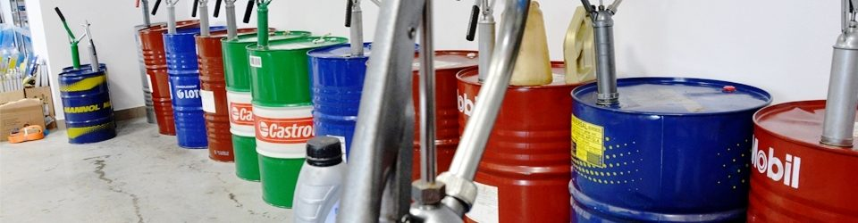
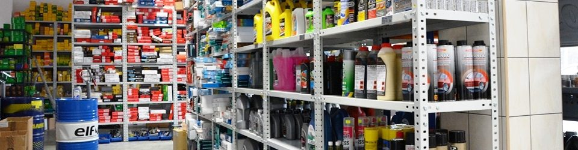
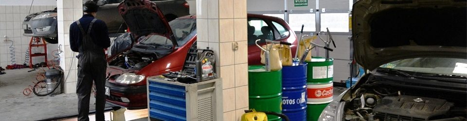
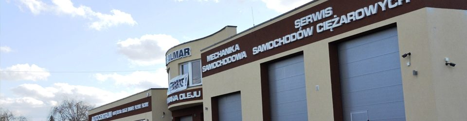
Obsługujemy sprzęt od samochodów osobowych, przez ciężarowe i autobusy, po maszyny budowlane i specjalistyczne. Kompleksowa obsługa firm i klientów indywidualnych w zakresie środków smarnych.
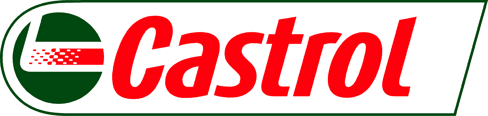
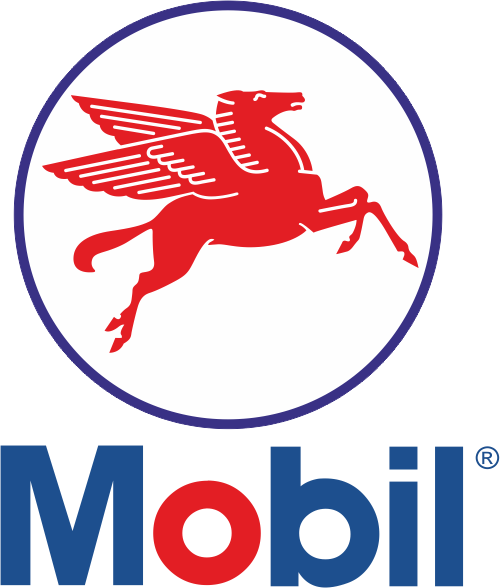
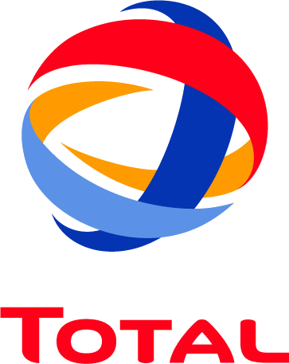
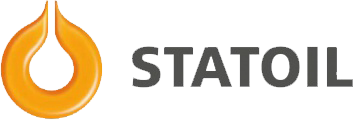
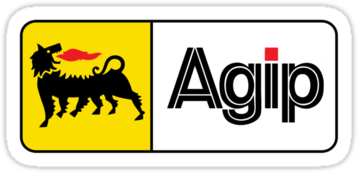
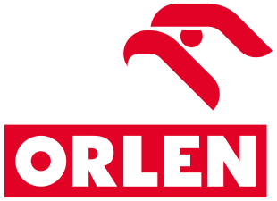
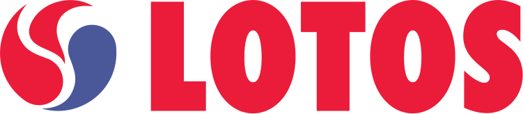
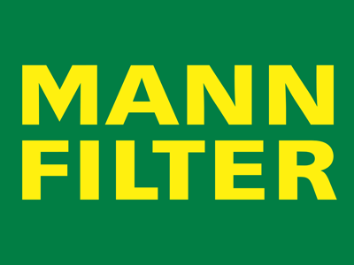
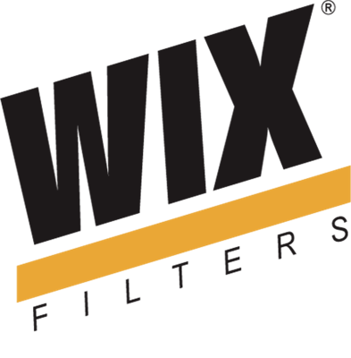
| Poniedziałek - Piątek | 7:00 - 19:00 |
| Sobota | 7:00 - 13:00 |